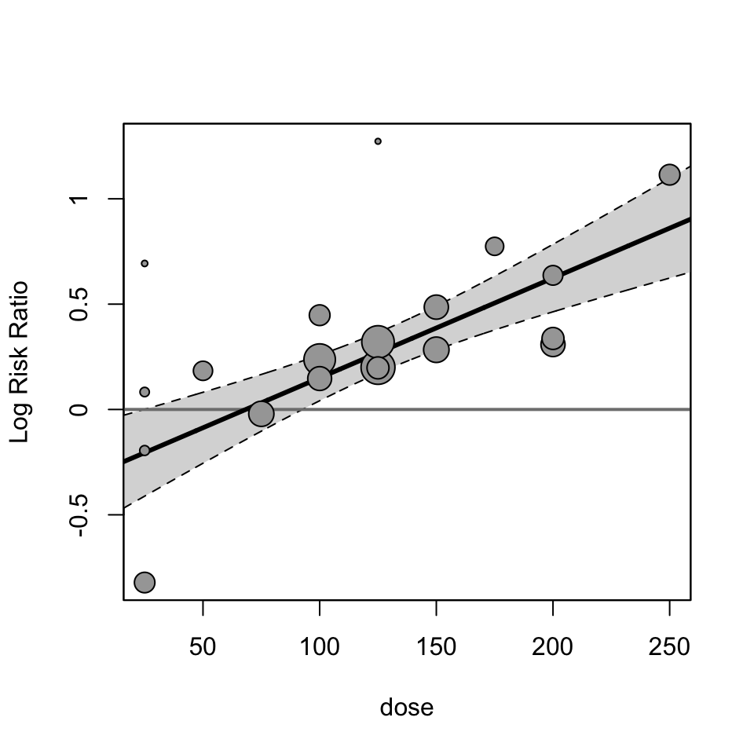
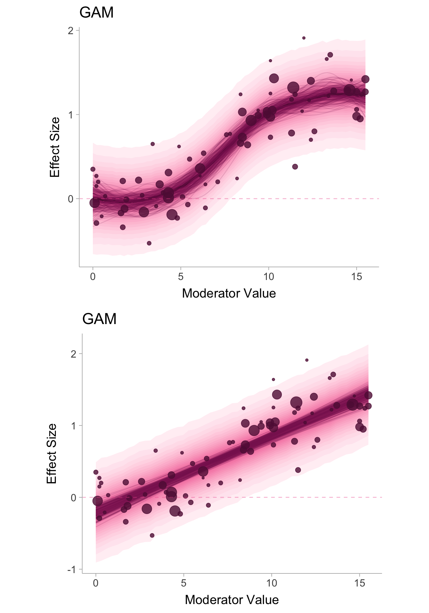

Generalized Additive Models (GAMs) for Meta-Regression using brms
Generalized Additive Models
Meta-regression
A GAM is a linear or generalized linear model that allows you to model non-linear relationships using splines, smooth functions that allows to model the “wiggliness” in the data. To my knowledge there is little/nothing out there regarding the use of GAMs in a meta-analysis context.
Author
Matthew B. Jané
Published
September 24, 2024
What is Meta-regression?
Meta-regression is a modeling approach used in meta-analysis to see how effect sizes vary across studies. For example, let’s say we want to know the effect of some drug on disease remission, but the effect sizes are highly heterogenous (studies use different methods, sample from different populations, etc. and thus have different estimands). We may want to know what aspects of these studies cause differences in their resulting effects? If different studies use a different doseage amount then we may hypothesize that dose will account for some of that heterogeneity in effects. Doseage is what we would call a moderator of the effect size (moderator is analogous to a predictor in a traditional regression). Meta-regression is like any regression model with the only difference that the data points represent entire studies and that studies are weighted such that more precise studies (i.e., larger sample sizes/smaller standard errors) are preferentially weighted. The regression line will estimate the conditional mean effect size.
Let’s visualize this example by running a meta-regression and creating a bubble plot (a scatter plot, but the data points are sized relative to the precision of the study). The effect size is the log risk ratio between treatment and control groups,
\[
\ln RR = \ln \frac{p_T}{p_C},
\] where \(p_T\) and \(p_C\) are the proportions of individuals in remission within the treatment and control group, respectively. We will then see how the doseage moderates the \(\ln RR\) across studies. In R, we can use the metafor(Viechtbauer 2010) package to fit a meta-regression.
Show the code
library(metafor)dat <-escalc(measure ="RR",# data set loaded in from metafor packagedata = dat.viechtbauer2021,# treatment/control number of people in remissionai = xTi, ci = xCi,# treatment/control group sample size inn1 = nTi, n2 = nCi,# label effect size and sampling variance (se^2)var.names =c("lnRR", "v"))# fit modelmdl <-rma(lnRR ~ dose, vi = v,data = dat)# plot modelregplot(mdl,refline =0)

We see a very strong relationship between the effect size and the dosage amount.
What would a meta-analytic GAM look like?
This brief intro section is a sort of a meta-analytic adaptation of a section of Michael Clark’s online text “Generalized Additive Models”.
In our example, we used a linear meta-regression so let us define a simple linear meta-regression model mathematically. An observed (arbitrary) effect size \(d_i\) from study \(i\) is expressed as,
\[
d_i = \underset{_\textrm{intercept}}{b_0} + \overset{^\textrm{moderator effect}}{b_1M_i} + \underset{_\textrm{true effect variability}}{u_i} + \overset{^\textrm{sampling error}}{\varepsilon_i}.
\] The first three terms in the equation is what defines the true effect size \(\delta_i\) for study \(i\) and the last term denotes sampling error which is what distinguishes the observed effect size \(d_i\) from the true effect size \(\delta_i\). The true effect size is conditionally distributed as,
\[
\delta_i \mid M_i \sim \mathcal{N}\left(b_0 + b_1M_i\, ,\, \tau^2\right)
\] Where \(\tau^2\) is the residual variance in true effects (i.e., \(\tau^2 = \mathrm{var}(u_i)\)). We can see that the conditional expectation of true effects is a linear function of the moderator variable \(\mathbb{E}[\delta_i \mid M] = b_0 + b_1M_i\). But we don’t have to model the conditional mean as linear. If the data appears non-linear we can instead model it as some smooth function \(f\) such that the conditional mean has some non-linear functional form,
For GAMs we elect to choose a space of functions (e.g., cubic splines) called a basis. A function within the function space can be expressed as a linear combination of basis functions. Essentially, we want to estimate this “big” function with with a series of known “smaller” functions. For our case, the function \(f(M_i)\) can be expressed as, \(f(M_i) = \sum^m_{q=1} b_q\xi_q(M_i)\), where \(\xi_q\) are basis functions. Therefore the conditional distribution of true effects is now given by,
The conditional expectation of true effects now can have a lot of flexibility. Note that we do not want to try to interpret the regression coefficients \(b_q\) of those smaller basis functions, instead we want to interpret the bigger function which is estimating the conditional mean of true effects. To estimate the conditional expectation, GAMs utilize penalized splines which penalizes the function for being too “wiggly” so as to maintain a parsimonious model. The number of knots (i.e., the joints/abscissa of the “big” function) also does not have to be set manually like they do in other spline models.
Loading in packages
We will need the following packages before we begin.
yi sei xi
1 0.99 0.1341641 9.4
2 0.54 0.2049390 6.3
3 -0.01 0.1760682 1.9
4 1.29 0.1483240 14.5
5 0.66 0.1264911 8.4
6 -0.12 0.1140175 1.8
The effect size is denoted with yi, the standard errors are denoted with sei, and the study-level moderator values is denoted with xi.
Constructing the brms model
Using the brm function in the brms(Bürkner 2021) package we can construct the meta-regression GAM model by utilizing the se() argument to input the standard errors of the effect sizes. Then s() function to tell brms that we are fitting a GAM. The sigma=TRUE function allows us to have heterogeneity, that is, the model includes a \(\sigma\) parameter which represents the standard deviation in true effects which we previously defined as \(\tau\).
We can plot out the models by displaying the estimates of the conditional effect size mean that are compatible with the data (denoted with the dark lines) and the conditional distribution of effect sizes (the density band with the bounds denoting the 95% prediction interval).
Show the code
# Extract conditional mean estimates for GAMgam_conditional_means <- dat %>%data_grid(xi =seq_range(xi, n =101), sei = sei) %>%add_epred_draws(mdl_gam, ndraws =200)# Extract true effect size predictions to construct true effect distribution for GAMgam_predictions <- dat %>%data_grid(xi =seq_range(xi, n =71), sei = sei) %>%add_predicted_draws(mdl_gam, ndraws =400)p1 <-ggplot() +stat_lineribbon(data = gam_predictions, aes(x = xi, y = .prediction, fill_ramp =after_stat(.width)),.width =seq(.05,.95,by=.05), fill ="#ED5C9B") +scale_fill_ramp_continuous(range =c(1, .1), guide =guide_rampbar(to ="#ED5C9B")) +geom_line(data = gam_conditional_means, aes(x = xi, y = .epred, group = .draw),color ="#861d5e", alpha = .15) +geom_point(data = dat, aes(x = xi, y = yi, size =1/sei^2), alpha = .8, color ="#601543") +theme_ggdist(base_size =15) +geom_hline(yintercept =0, linetype="dashed", color ="#ED5C9B",alpha=.4) +theme(legend.position ="none",aspect.ratio = .8) +ylab("Effect Size") +xlab("Moderator Value") +ggtitle("GAM")# Extract conditional mean estimates for GAMlm_conditional_means <- dat %>%data_grid(xi =seq_range(xi, n =101), sei = sei) %>%add_epred_draws(mdl_lm, ndraws =200)# Extract true effect size predictions to construct true effect distribution for GAMlm_predictions <- dat %>%data_grid(xi =seq_range(xi, n =51), sei = sei) %>%add_predicted_draws(mdl_lm, ndraws =200)p2 <-ggplot() +stat_ribbon(data = lm_predictions, aes(x = xi, y = .prediction, fill_ramp =after_stat(.width)),.width =seq(.05,.95,by=.05), fill ="#ED5C9B") +scale_fill_ramp_continuous(range =c(1, .1), guide =guide_rampbar(to ="#ED5C9B")) +geom_line(data = lm_conditional_means, aes(x = xi, y = .epred, group = .draw),color ="#861d5e", alpha = .15) +geom_point(data = dat, aes(x = xi, y = yi, size =1/sei^2), alpha = .8, color ="#601543") +theme_ggdist(base_size =15) +geom_hline(yintercept =0, linetype="dashed", color ="#ED5C9B",alpha=.4) +theme(legend.position ="none",aspect.ratio = .8) +ylab("Effect Size") +xlab("Moderator Value") +ggtitle("GAM")cowplot::plot_grid(p1,p2,ncol =1)

Predictive Check
The predictive check of the GAM model captures the data better than the linear model in this data set.
Thanks to Isabella R. Ghement, Stephen J. Wild, and Solomon Kurz for their advice and feedback on this post.
References
Bürkner, Paul-Christian. 2021. “Bayesian Item Response Modeling in R with brms and Stan.”Journal of Statistical Software 100 (5): 1–54. https://doi.org/10.18637/jss.v100.i05.
R Core Team. 2024. R: A Language and Environment for Statistical Computing. Vienna, Austria: R Foundation for Statistical Computing. https://www.R-project.org/.
Viechtbauer, Wolfgang. 2010. “Conducting Meta-Analyses in R with the metafor Package.”Journal of Statistical Software 36 (3): 1–48. https://doi.org/10.18637/jss.v036.i03.
Wickham, Hadley, Mara Averick, Jennifer Bryan, Winston Chang, Lucy D’Agostino McGowan, Romain François, Garrett Grolemund, et al. 2019. “Welcome to the tidyverse.”Journal of Open Source Software 4 (43): 1686. https://doi.org/10.21105/joss.01686.